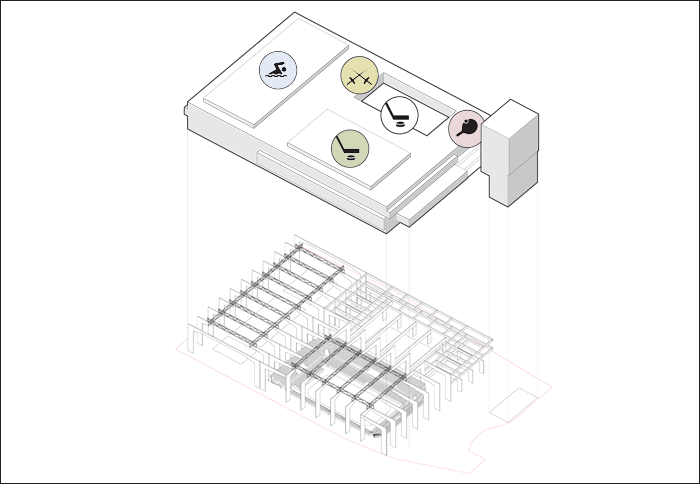
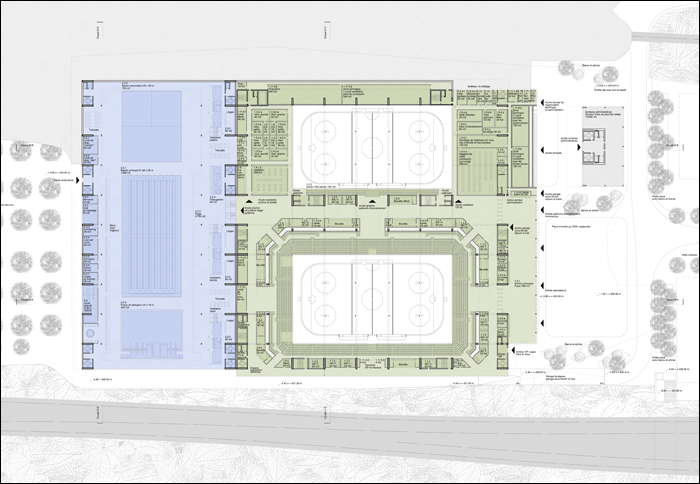
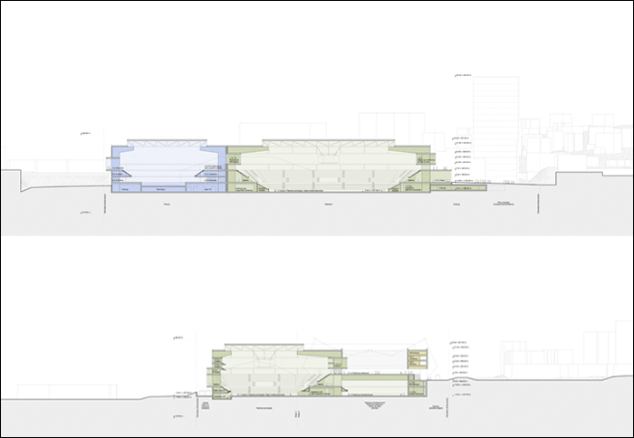

Projekt: SPORTZENTRUM, LAUSANNE








Projekt: SPORTZENTRUM, LAUSANNE
Ort: Gemeinden von Renens und Prilly, Lausanne (VD)
Bauherrschaft: CIGM, Centre Intercommunal de Glace de Malley SA, Prilly
Program: Eishockey Stadion (7’000-10’000 Zuschauer), olympische Schwimmhalle, Tischtennis- und Fechtsporthalle.
Gebäudekosten: 206’000’000 CHF
Datum: 2014
Typ: offene Wettbewerb
Team: NYX architectes, Basler & Hofmann AG (Bauingenieur), ER Energies Rationnelles SA (Gebäudetechnik), SIMA/BREER (Landschaftarchitektur)
Bilder: NYX architectes